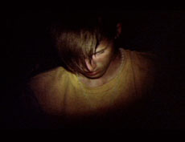

|
TRYPPS #3
Ben Russell | USA 2007 | 12 min.
Material: 35mm
Format: 35mm
Original language: English
Camera: Ben Russell
Production: Ben Russell
Print/Sales: Ben Russell
Awards: Best Short Documentary, Festival EntreVues, Belfort 2007, Best Experimental Film, Chicago Underground Film Festival 2007 Special Mention, Onion City Film Festival, Chicago 2007, Best Short Film, Silver Lake Film Festival, Los Angeles 2007, Best of Festival, Milwaukee Underground Film Fest 2007, Special Mention, Ann Arbor Film Festival 2007
www.dimeshow.com
www.magiclanterncinema.com
"...a filmic portrait of secular rapture that harks back to the great annunciation canvases of Titian and Caravaggio." – Michael Sicinski, Green Cine Daily
The third part in a series of films dealing with naturally-derived psychedelia. Shot during a performance by Rhode Island noise band Lightning Bolt, this film documents the transformation of a rock audience’s collective freak-out into a trance ritual of the highest spiritual order.
Ben Russell, born in 1976. Ben Russell studied arts and semiotics at the Brown University and film and new media at the Art Institute in Chicago. He works as photographer, curator and experimental filmmaker. Ben Russell lives in Chicago.
Films (selection): 2009 Let Each One Go Where He May (UNDERDOX 05) | 2008 Trypps #4, Tjúba Tén / The Wet Season | 2007 Peace Noise, Trypps #3 | 2006 Trypps #2, Michoacan: La Muerte / El Traidor | 2005 Trypps #1, The Red and the Blue Gods, The Twenty-One Lives of Billy the Kid | 2004 The Ataraxians, Extra Terrestrial | 2002 The Breathers-In, Terra Incognita | 1998/2000 The Death of Abraham Lincoln (in Three Parts)
back
|